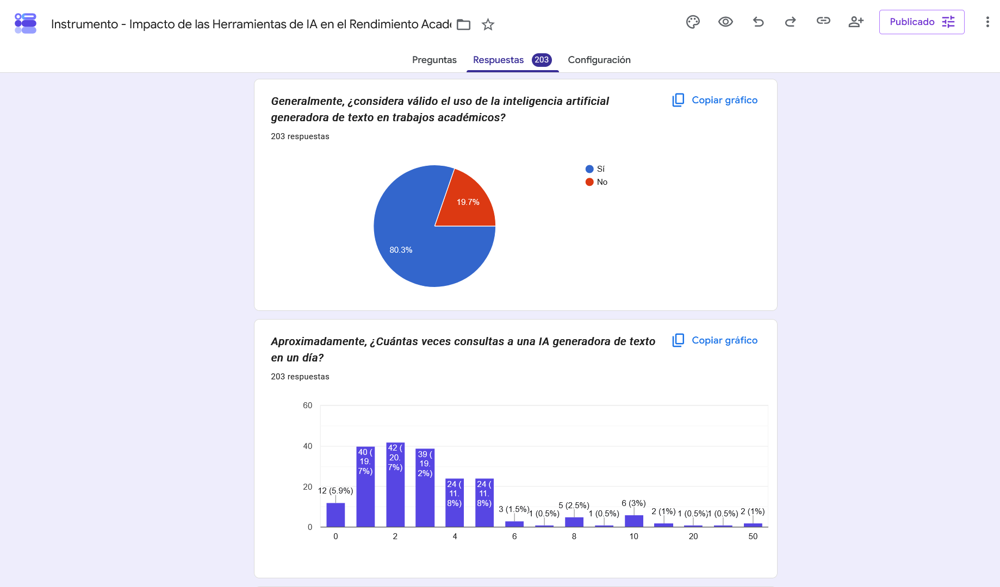
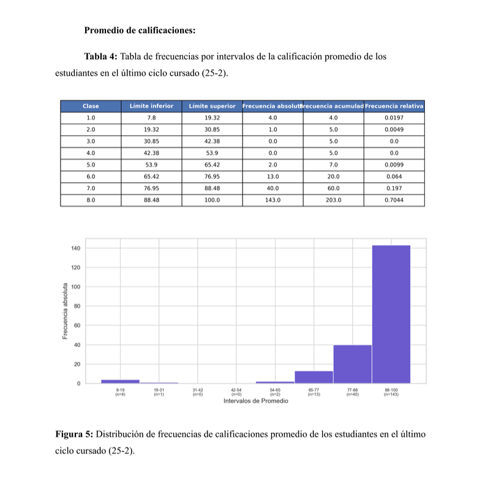
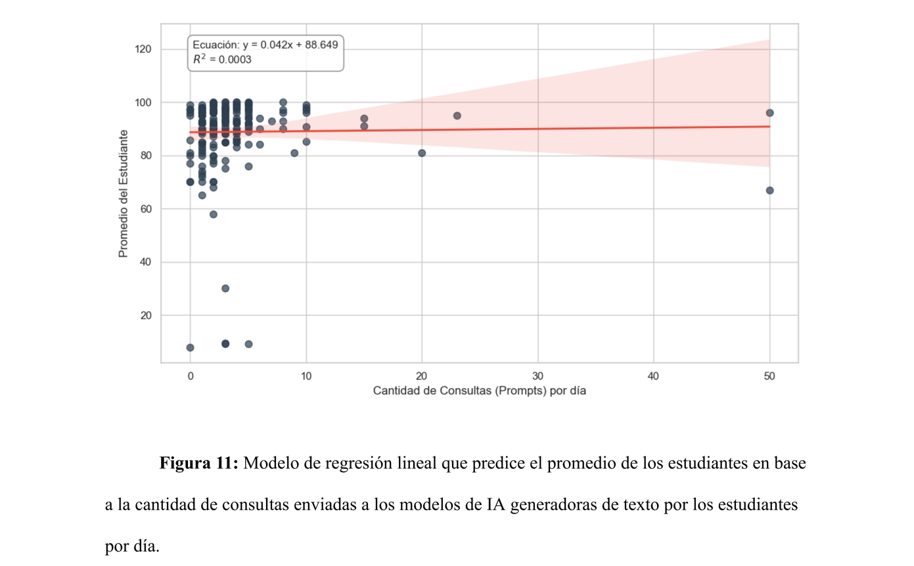

Impacto de la Inteligencia Artificial en el Rendimiento Académico
Enlaces: Memoria Técnica / Resumen Ejecutivo / CartelLa investigación académica Impacto de la Inteligencia Artificial en el Rendimiento Académico fue desarrollada como proyecto integral de la materia Análisis de Datos en Ingeniería impartida por la profesora Estrada Lara Lucía Guadalupe. La investigación se desarrolló en colaboración con Fuentes Padilla Aarón Esteban, Santillanes Hernández Ángel Andrés, Monroy Álvarez Itzel Alejandra y González Guerrero Gael.
El objetivo de la investigación fue determinar si el uso de la inteligencia artificial en actividades académicas presentaba una diferencia en el rendimiento académico de los estudiantes activos de la carrera Ingeniería en Sistemas de Información del campus Hermosillo en el ciclo escolar 2026-1. Dicho enfoque se escogió por su relevancia en el panorama estudiantil de los últimos años, además de presentar una oportunidad de vincular el análisis estadístico de datos con áreas de nuestra carrera.
La profesora solicitó que trabajemos secuencialmente con las siguientes etapas:
- Definición del proyecto: En la definición del problema se especificaron aspectos claves de nuestra investigación, entre estos el ámbito, objeto de estudio, población por trabajar, entre otros.
- Elaboración del marco teórico: En el marco teórico, se definieron conceptos e información esencial para entender el desarrollo del proyecto. Entre los conocimientos, se encuentran los conceptos estadísticos utilizados, desambiguaciones sobre conceptos como el rendimiento académico y la IA generativa, entre otros.
- Definición de la metodología: En la definición de la metodología, se especificaron aspectos sobre la recolección de datos y su interpretación, tomando como referencia metodologías de autores que desarrollaron investigaciones similares para trabajar sobre nuestra población de estudio, definida de forma concreta en esta fase. De manera similar, se definieron las herramientas de software utilizadas para manejar los datos, las variables por trabajar y el instrumento que la población contestó para obtener la información.
- Elaboración de la base de datos: Con las variables y sus preguntas definidas en la fase anterior, se creó una base de datos que sintetizara las características de la información esperada, como el tipo de variable, su descripción, su unidad de medición y que representan.
- Recopilación de información: La fase de recopilación de información comprende el periodo del 1ro de abril al 19 de abril de 2026 en el que se aplicó el instrumento, considerando a los 564 estudiantes de la carrera. Se estableció un mínimo de 228 observaciones necesarias para trabajar con datos que presenten un margen de error del 95%, de los que se obtuvieron 203. Dicha discrepancia presenta una pequeña posibilidad de que el tratamiento de los datos sea erróneo, preocupaciones que presentamos y se omitieron por figuras de autoridad, quienes solicitaron que la investigación continuara con los datos recolectados.
- Análisis descriptivo y relacional: Con la información recabada, se llevó a cabo un análisis estadístico de las variables más relevantes para el estudio, así como un análisis relacional con las variables de la calificación promedio del último semestre cursado por los estudiantes y la frecuencia en el uso de la inteligencia artificial, ofreciendo los números que permitieron comprobar o no la hipótesis.
- Estudio de prueba de hipótesis: Con los resultados del análisis relacional, establecimos como hipótesis nula que existe evidencia estadística que demuestra que no hay relación de dependencia lineal entre la frecuencia del uso de la inteligencia artificial y el promedio de los estudiantes, la que los números fueron incapaces de negar, por lo que no existe evidencia significativa que demuestre que la inteligencia artificial tiene un impacto sobre el rendimiento académico. Un modelo de regresión lineal demostró esto con mayor validez, ofreciendo un pobre modelo de predicción del promedio de un estudiante en base a su uso de la inteligencia artificial.
- Redacción de conclusión: Con la hipótesis incapaz de negarse, se desarrolló una conclusión que recolectó los resultados y ofreció reflexiones finales sobre la investigación, su metodología y la inteligencia artificial en la cultura académica.
- Redacción de introducción: Con el resto de la investigación completa, se redactó una introducción que permitiera anticipar al lector sobre el contenido de esta.



La investigación fue reconocida por la profesora como un trabajo de excelente calidad, apreciando la honestidad en la presentación de nuestros resultados y la efectividad en el uso de la metodología, recibiendo una calificación perfecta de 100/100. Además, la investigación fue seleccionada para su presentación en el Coloquio Universitario de Ingenierías de Estadística Aplicada, además de contar con un cartel que se presentó en el mismo evento.